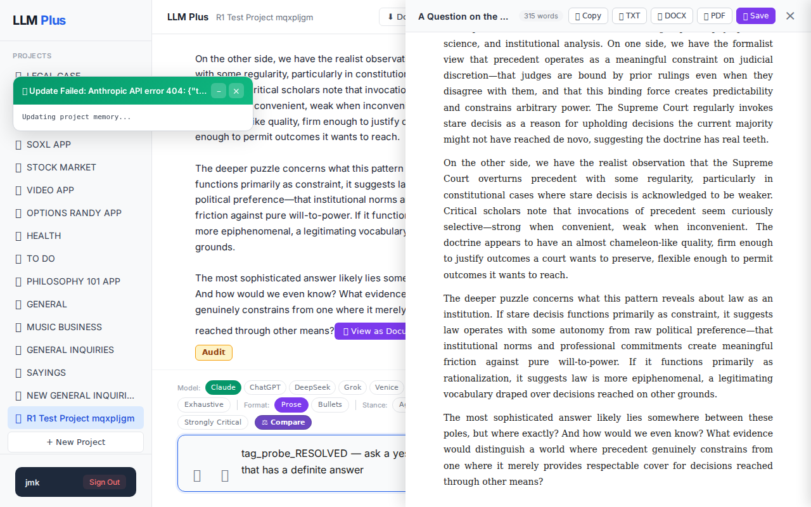
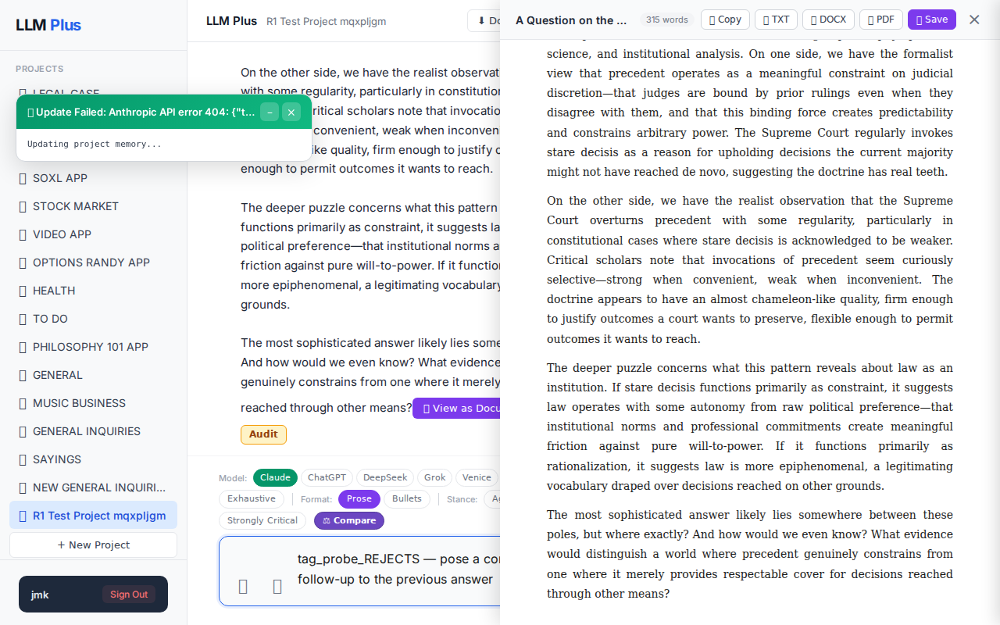

Exchange #1 in test project (Invariant A check)
R1 approach: substantive_question
R1 reasoning: (brain returned malformed JSON; fallback used)
R1 input (verbatim):
tag_probe_OPEN — ask an open-ended scholarly question with no resolution
App page text after:
Tractatus delta
nodes: 0 → 10 (Δ 10)
new ids: 1.0, 1.1, 1.2, 1.3, 1.4, 1.5, 1.6, 1.1.1, 1.2.1, 1.2.2
new tags: QUESTION, ASSERTS, ASSERTS, OPEN, OPEN, QUESTION, ASSUMES, DOCUMENT, DOCUMENT, ASSERTS
tags valid:
YES ·
ids valid:
YES
⚠ Invariant A: tree grew by more than 8
Network calls
| method | path | status | ms | response excerpt |
|---|
| POST | /api/chat | 200 | 13584ms | data: {"type":"status","status":"thinking"}
data: {"type":"text","text":"#"}
data: {"type":"text","text":" A Question on the Nature of Legal Precedent and Institutional"}
data: {"type":"text","text":" Memory\n\nHere is an open-ended scholarly question worth examining:\n\n**To what extent does the doctrine of stare decisis function"}
data: {"type":"text","text":" as genuine constraint versus po |
| POST | /api/tractatus/update | 200 | 6479ms | data: {"type":"status","message":"Updating project memory..."}
data: {"type":"text","text":"```json\n{\n \"1"}
data: {"type":"text","text":".0\": \"QUESTION: To what extent does the doctrine of stare decisis function as genuine constraint versus post-hoc rationalization in constitutional adjudication, and what does this tell us about the relationship between law and power"}
data: {"type":"text |
SSE events observed (29)
{"type":"status","status":"thinking"}
{"type":"text","text":"#"}
{"type":"text","text":" A Question on the Nature of Legal Precedent and Institutional"}
{"type":"text","text":" Memory\n\nHere is an open-ended scholarly question worth examining:\n\n**To what extent does the doctrine of stare decisis function"}
{"type":"text","text":" as genuine constraint versus post-hoc rationalization in constitutional adj"}
{"type":"text","text":"udication, and what does this tell us about the relationship between law and power?**\n\nThis question sits"}
{"type":"text","text":" at the intersection of legal philosophy, political science, and institutional analysis. On one side, we have the formalist view that precedent operates"}
{"type":"text","text":" as a meaningful constraint on judicial discretion—that judges are bound by prior ru"}
{"type":"text","text":"lings even when they disagree with them, and that this binding force creates predictability and constrains arbitrary power. The"}
{"type":"text","text":" Supreme Court regularly invokes stare decisis as a reason for upholding decisions the current"}
{"type":"text","text":" majority might not have reached de novo, suggesting the doctrine has real"}
{"type":"text","text":" teeth.\n\nOn the other side, we have the realist observation that the Supreme Court overturns precedent with"}
{"type":"text","text":" some regularity, particularly in constitutional cases where stare decisis is acknowledged to be we"}
{"type":"text","text":"aker. Critical scholars note that invocations of precedent seem"}
{"type":"text","text":" curiously selective—strong when convenient, weak when inconvenient. The doctrine appears to have"}
{"type":"text","text":" an almost chameleon-like quality, firm enough to justify outcomes"}
{"type":"text","text":" a court wants to preserve, flexible enough to permit outcomes"}
{"type":"text","text":" it wants to reach.\n\nThe deeper puzzle concerns what this pattern reveals about law as"}
{"type":"text","text":" an institution. If stare decisis functions primarily as constraint, it suggests law operates with some autonom"}
{"type":"text","text":"y from raw political preference—that institutional norms and"}
{"type":"text","text":" professional commitments create meaningful friction against pure will-"}
{"type":"text","text":"to-power. If it functions primarily as rationalization, it suggests law is more epiphenomenal, a"}
{"type":"text","text":" legitimating vocabulary draped over decisions reached on other grounds.\n\nThe"}
{"type":"text","text":" most sophisticated answer likely lies somewhere between these poles,"}
{"type":"text","text":" but where exactly? And how would we"}
{"type":"text","text":" even know? What evidence would distinguish a world where preced"}
{"type":"text","text":"ent genuinely constrains from one where it merely provides respectable cover for decisions reached through other means?"}
{"type":"tractatus_trigger","projectId":"20fb9068-92aa-49d5-aeca-66eaa445dbcc","userMessage":"tag_probe_OPEN — ask an open-ended scholarly question with no resolution","assistantRespo
{"type":"[DONE]"}
INVARIANT VIOLATIONS- Invariant A: tree grew by 10 (>8)
Judge critique
(judge returned no JSON; raw text included)
Screenshots

Exchange #2 in test project (Invariant A check)
R1 approach: substantive_question
R1 reasoning: (brain returned malformed JSON; fallback used)
R1 input (verbatim):
tag_probe_RESOLVED — ask a yes/no question that has a definite answer
App page text after:
Tractatus delta
nodes: 10 → 10 (Δ 0)
new ids: (none)
new tags: (none)
tags valid:
YES ·
ids valid:
YES
⚠ Invariant A: tree did not grow
Network calls
| method | path | status | ms | response excerpt |
|---|
SSE events observed (0)
(none)
INVARIANT VIOLATIONS- Invariant A: tree grew by 0 after chat exchange
Judge critique
(judge returned no JSON; raw text included)
Screenshots


Exchange #3 in test project (Invariant A check)
R1 approach: substantive_question
R1 reasoning: (brain returned malformed JSON; fallback used)
R1 input (verbatim):
tag_probe_REJECTS — pose a contradictory follow-up to the previous answer
App page text after:
Tractatus delta
nodes: 10 → 10 (Δ 0)
new ids: (none)
new tags: (none)
tags valid:
YES ·
ids valid:
YES
⚠ Invariant A: tree did not grow
Network calls
| method | path | status | ms | response excerpt |
|---|
SSE events observed (0)
(none)
INVARIANT VIOLATIONS- Invariant A: tree grew by 0 after chat exchange
Judge critique
(judge returned no JSON; raw text included)
Screenshots

